Eid Wash & Wear 112 × 84: Bulk Greige and Small-Batch Finished
A medium-weight wash & wear woven at 112 × 84, in 11 shades for the Eid season. Buy it as bulk greige by the lot, or as finished fabric in small batches. Every order is quoted from a written spec.
Specification
| Construction | 112 × 84 (reed × pick) |
|---|---|
| Fabric type | Wash & wear, woven |
| Fabric weight | Low Medium High GSM is confirmed on a weighed sample. |
| Shades | 11 (see the shade card below) |
| Season | All season |
| Bulk supply | Greige, by the lot |
| Small batches | Finished fabric, for buyers who cannot take a full lot |
| MOQ and lead time | Confirmed in the quotation |
| Price | Quote on request |
The fabric
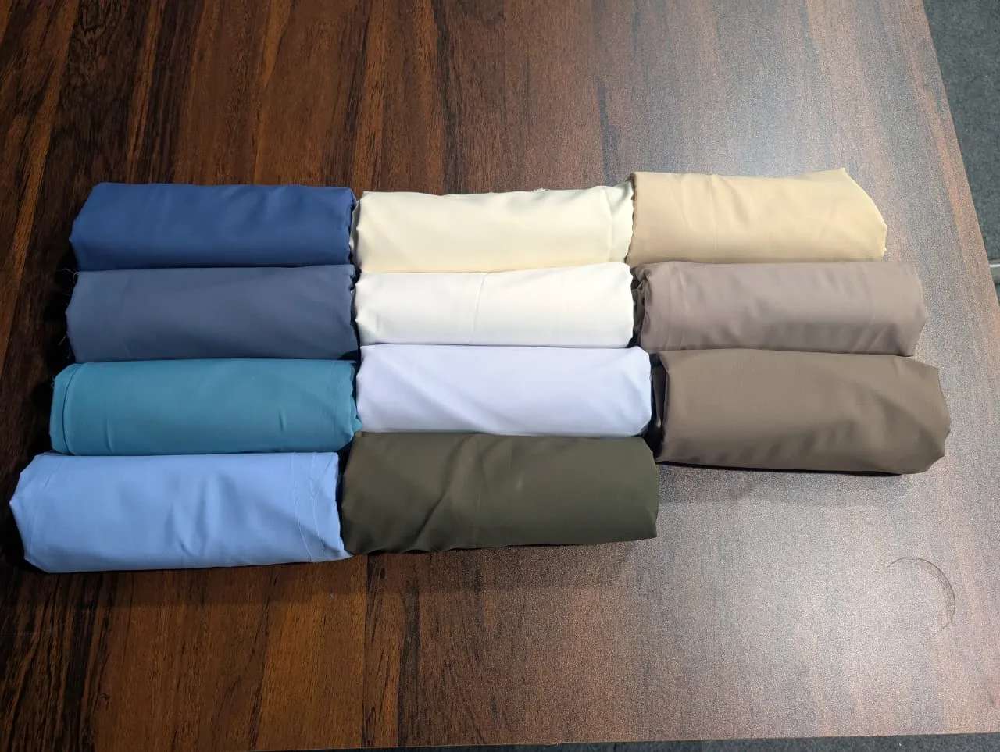
Mill photo of the 11 shades.
Shade card
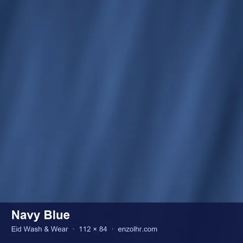
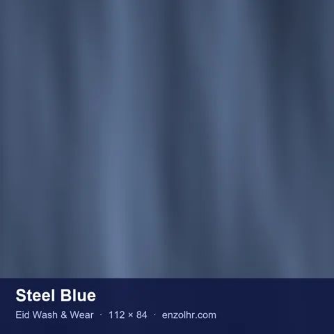
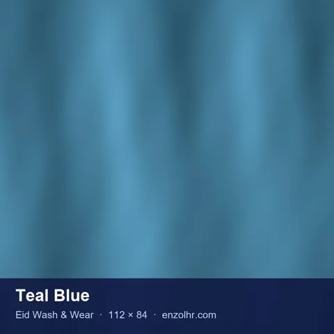
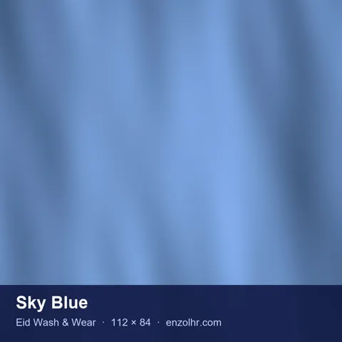
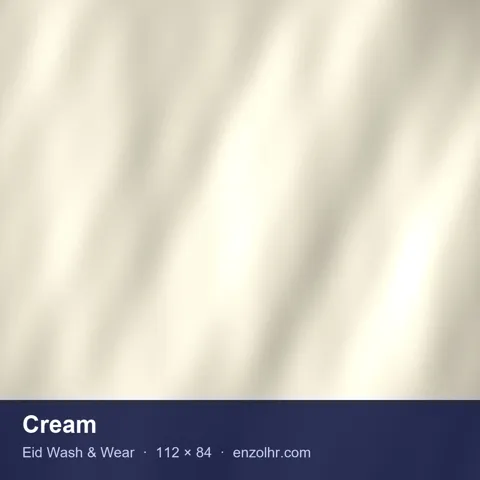
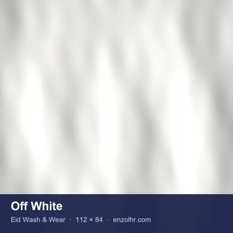
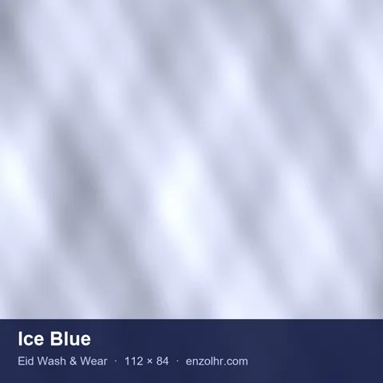
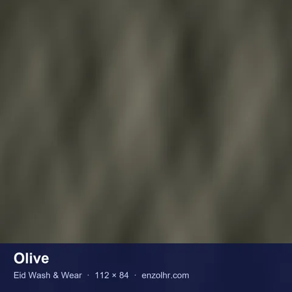
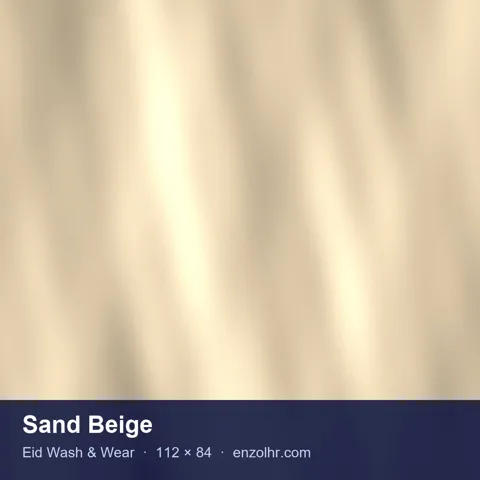
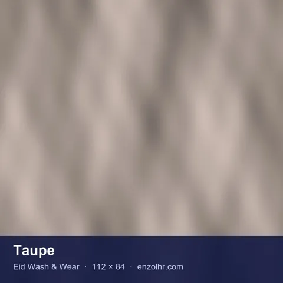
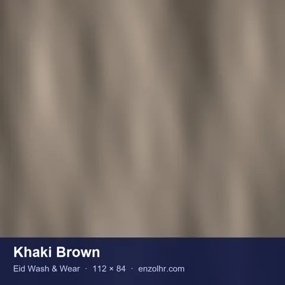
Colours are taken from the mill photo and vary by screen. Ask about samples before you book bulk.
Why buyers order from ENZO
The spec is written down
Construction, shade and quantity go on a written quotation, so both sides agree what is being bought.
Inspected before dispatch
An independent final inspection is done before the fabric leaves.
Greige or finished
Take bulk greige for your own processing, or finished fabric in a small batch that fits your shop or stitching unit.
Related guides
Questions
What does 112 × 84 mean?
112 is the reed (ends per inch in the warp) and 84 is the pick (picks per inch in the weft). Together they describe how closely the cloth is woven.
Can I buy greige and finish it myself?
Yes. Bulk greige is sold by the lot to processors, converters, wholesalers and exporters.
I only need a small quantity. Can I still buy?
Yes. Finished fabric is available in small batches for stitching units, shops and smaller brands. The batch size is confirmed in the quotation.
When should I book for Eid?
Wholesalers stock before Ramadan, so book early. Send your quantity and shades on WhatsApp and ENZO replies with the timeline for your order.
What is the GSM?
The fabric sits in the medium weight range. The exact GSM is confirmed on a weighed sample before you book bulk.
Book your Eid wash & wear
Send quantity, shades and greige or finished. ENZO replies with a written quotation.